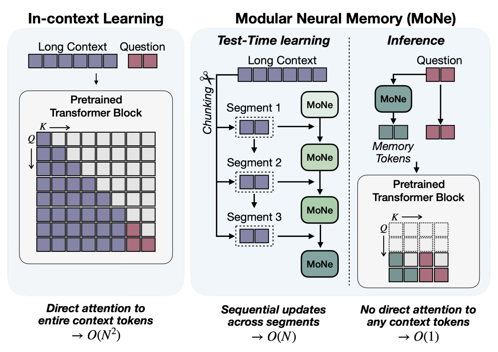
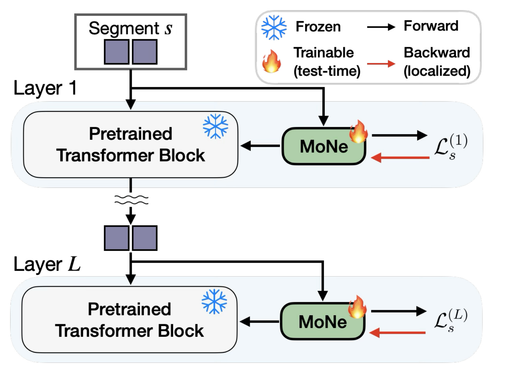
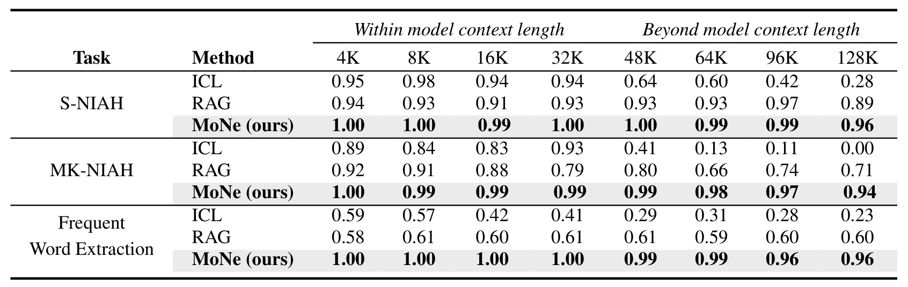
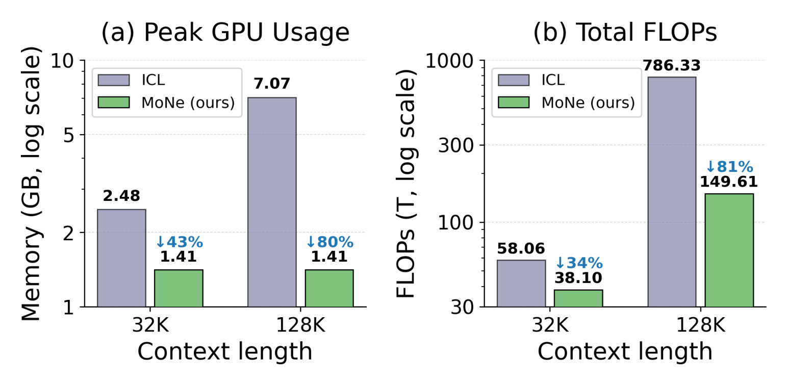
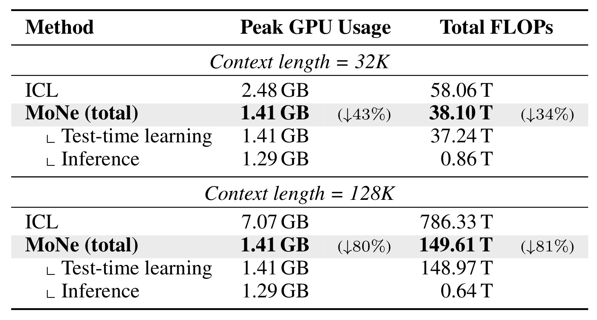
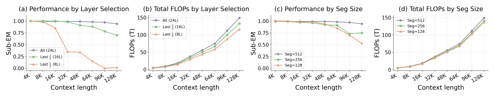

MoNe：面向高效长上下文推理的模块化神经记忆
《MoNe: Modular Neural Memory for Efficient Long Context Inference》由 Wonguk Cho、Kyubyung Chae、Tribhuvanesh Orekondy、Sunghyun Park、Hyoungwoo Park、Jeongho Kim、Arash Behboodi、Kyuwoong Hwang 与 Sungrack Yun 合作完成，作者均来自 Qualcomm AI Research。论文于 2026 年 8 月 18 日公开，收录于 AdaptFM Workshop at ICML 2026，可从 arXiv:2608.17616 进入。本文讨论的是给冻结预训练 Transformer 外挂一组可在测试时快速更新的神经记忆，从而把“读入长上下文”与“回答一个或多个查询”拆开。论文给出了完整算法、RULER 评测与成本统计；截至本轮核验，未找到独立官方代码仓库。
现有长上下文路线要么让查询反复读取全部 token、把计算与显存绑在上下文长度上，要么只保留可局部检索的片段，或要求从头训练新架构。论文要解决的是：能否在不改动冻结 Transformer 主干的前提下，把一次长上下文编码成可复用的神经记忆，并让后续查询成本不再随原上下文长度增长。
1. 背景和问题
1.1 三条常见路线各自留下什么缺口
长上下文在个性化助手、长文档问答和持续运行的 agent 中不是可选装饰：模型需要从用户历史、合同、病历、会话轨迹或工具日志中找到远距离证据，有时还要把多个分散片段组合起来。最直接的 in-context learning（ICL）把全部上下文与查询放进同一前向过程。设上下文长度为 $N$，标准全注意力的计算量随 $N^2$ 增长，KV cache 至少随 $N$ 线性增长；即使名义上下文窗口容得下，模型也可能出现 lost-in-the-middle 或 context rot，无法稳定使用已经放进窗口的证据。论文特别瞄准资源受限设备：在小模型和有限显存上，“窗口存在”与“能可靠、低成本地使用窗口”是两回事。
RAG 把上下文切成块，先以嵌入相似度检索少数块，再把这些块送入生成模型，因而规避了让查询注意全部 token 的高成本。它在局部事实查找上很有竞争力，但检索器需要在每个查询到来时重新搜索，而且被选中的块决定了后续模型能看到什么。若答案依赖多个分散、单独看并不显著的片段，局部相似度排序可能在进入生成阶段之前就丢掉关键证据。对个性化场景而言，这还意味着每轮对长用户历史重复做检索，查询数越多，重复开销越明显。
另一条路线是 Mamba、TTT、Titans 等递归或神经记忆架构：它们用可更新状态替代完整历史，从复杂度上更接近长序列所需的线性处理。然而，许多方案需要改变基础架构并从头训练，不能直接接到现有 Transformer 权重上。MoNe 的研究位置由此变得清楚：它不是要证明记忆一定优于检索，也不是重新训练一个长上下文基础模型，而是尝试把快权重记忆做成层级外挂模块，只离线训练少量适配器和更新规则，部署时保持预训练主干冻结。
1.2 真正需要同时满足的四个条件
第一，模块必须能顺序吸收任意长度上下文，而不要求把全部历史同时放入显存。第二，写入完成后，查询前向不能再次读取原上下文，否则单次查询成本仍随 $N$ 增长。第三，外挂记忆不能依赖跨越整个主干的反向传播，否则“冻结主干”和“易接入”只停留在参数声明上，实际部署仍会承担昂贵计算图。第四，压缩不能只在短长度成立；若仅在训练过的 1K–4K 有效，到了 64K 或 128K 就遗忘早期片段，复杂度优势没有实际意义。
MoNe 对这四点给出的组合答案是：以固定 $T=512$ 的 segment 顺序读取上下文；在每个 Transformer 层旁放一个 SwiGLU 快权重网络；用该层自身的前向激活构造关联键值和局部损失，只更新该层快权重；全部 segment 写完后，用查询 token 读取最终快权重，产生固定数量的 memory tokens，再把它们作为键和值注入冻结注意力。这样，写入遍历每个上下文 token 一次，查询只依赖查询与固定大小记忆。
1.3 复杂度主张应怎样理解
论文写“预处理 $O(N)$、查询 $O(1)$”时，常数所针对的是原上下文长度 $N$。它不表示生成一个答案不再依赖 Transformer 层数、隐藏维度、查询长度、输出长度或固定 memory token 数，也不表示 128K 上下文可以零成本压缩。恰恰相反，后文成本表显示 128K 时 MoNe 的总 149.61T FLOPs 中，148.97T 来自 test-time learning。真正的服务价值来自两个条件：一次写入能被多次查询摊销，或上下文能增量追加而无需从头重读。若每份上下文只回答一次且马上丢弃，线性写入仍是主要账单；若用户历史长期存在并被反复询问，缓存最终快权重才可能形成系统优势。
论文还把“长长度外推”与“复杂推理”区分得不够充分。RULER 的 S-NIAH、MK-NIAH 和 Frequent Word Extraction 能检验远距离查找、多键干扰与全局频率聚合，却不能等价代表长合同中的跨条款推理、真实多轮对话记忆或 agent 的因果状态跟踪。尤其是神经快权重没有显式文档 ID、时间戳或可回溯段落，答对合成 needle 并不能证明它会保存来源关系、冲突证据和事件先后。若后续任务要求指出“答案来自哪一段”或在新旧事实冲突时撤销旧记忆，模型还需要额外的检索或状态治理机制；这也是从基准可行性走向长期服务时必须补齐的能力。因此，本文更可信的结论是：MoNe 在受控信息保留任务上显示出强长度外推和明确成本边界；它是否能保持自然长文档中的推理结构，仍需新的任务证据。
2. 方法
2.1 两阶段问题设置与模块边界
论文考虑一个隐藏维度为 $d$、共有 $L$ 层的预训练 Transformer，所有主干参数保持冻结。上下文 $C=(t_1,\ldots,t_N)$ 被切成 $S$ 个互不重叠、长度为 $T=512$ 的 segment。每个 segment 经过标准层内投影：
符号解释：$X^{(l)}\in\mathbb{R}^{T\times d}$ 是第 $l$ 层当前 segment 的隐藏状态；$W_q,W_k,W_v$ 是冻结主干的查询、键和值投影；$Q,K,V$ 是标准注意力输入。普通 ICL 随后计算
符号解释：$d_h$ 是单个注意力头的维度，$QK^\top$ 形成 token 两两交互矩阵。若一次将 $N$ 个上下文 token 放进注意力，矩阵规模给出 $O(N^2)$ FLOPs，并需要随 $N$ 增长的 KV cache。MoNe 没有修改这个主干算子，而是改变它在写入和查询两个阶段能看到的 K/V 来源：写入阶段只处理一个固定 segment，查询阶段只拼接固定大小的 memory K/V。

Figure 1 左侧把长上下文和问题一起送入主干，问题 token 的注意力行必须覆盖全部历史，因此每个新问题都重新承担长前缀。右侧先把 Long Context 切成 segment，按顺序更新同一组 MoNe 状态；到 inference 时，问题只进入 MoNe 和预训练块，绿色 memory tokens 取代原上下文成为可注意的历史载体。图中 $O(N)$ 与 $O(1)$ 分别标在 sequential updates 和 no direct attention 路径上，说明它们是两个阶段的复杂度，而不是把一次 128K 请求整体宣称成常数成本。图还隐含了复用条件：最后一个绿色状态若被缓存，可服务多个问题；若不缓存，右图中的写入链仍需为每个问题重做。
MoNe 的核心贡献不是发明另一个注意力公式，而是把一次性上下文写入与可复用查询读取分离，并让两者都通过冻结主干已有接口完成。 这也说明模块边界：主干负责表示与生成，快权重负责把长上下文压到逐层状态，离线训练只学习使这套压缩/读取规则可工作的少量 LoRA 与元参数。
2.2 神经记忆生成与注意力注入
每个 decoder layer $l$ 配置一个按快权重头拆分的 SwiGLU MLP 记忆 $M(\cdot;W^{(l)})$。每头三组矩阵均为 $\mathbb{R}^{d_h\times d_h}$，记忆函数写作：
符号解释：$W^{(l)}=\{W_{\mathrm{in}},W_{\mathrm{gate}},W_{\mathrm{out}}\}$ 是第 $l$ 层随上下文快速变化的参数；$\operatorname{SiLU}$ 提供非线性，$\odot$ 是逐元素门控。与单一线性映射相比，SwiGLU 在相同快权重预算下能表示更丰富的键值关联。附录给出的实现使用 4 个快权重头、每头 $d_h=224$，每层都挂载记忆，总参数增量为主干的 6.4%。全部 $S$ 个 segment 写入后，查询位置 $j$ 通过主干的 $W_q$ 形成读键，并从最终状态生成记忆 token：
符号解释：$x_j$ 是当前查询 token 在第 $l$ 层的隐藏状态；$W_S^{(l)}$ 是读完全部 segment 的最终快权重；$h_j$ 经过每头 RMSNorm 和学习到的门控缩放。这里没有原上下文 token，查询只通过快权重状态恢复与自身相关的记忆表示。随后，$h$ 使用主干同一组冻结 $W_k,W_v$ 投影进键值空间，与查询自身的 K/V 拼接：
符号解释：$\Vert$ 表示序列维拼接；$Q,K,V$ 此时只来自查询 token，$W_kh,W_vh$ 是固定数量的 memory K/V。MoNe 不复制主干投影矩阵，而是在这些冻结权重上增加元训练的低秩适配器。每层 memory K/V 固定为 $T$ 个条目，因此其 cache 不随原上下文长度增长。要注意，固定的是相对 $N$ 的记忆长度，并非记忆容量无限；所有历史最终都被压进有限快权重与 memory token，碰到高熵、需要逐字恢复的自然语料时可能出现容量瓶颈。
2.3 关联记忆损失与层局部快权重更新
写入阶段的关键是从同一层的前向激活直接构造学习目标。对于 segment $s$ 中位置 $j$，论文用带元训练 LoRA 的键值投影产生关联对：
符号解释：$k_{s,j}^{(l)}$ 是要写入记忆的键，进一步经过 SiLU、每 token 的 L2 归一化与 segment-local RoPE；$v_{s,j}^{(l)}$ 是目标值，经过 SiLU。两者都由当前层激活得到，不需要最终词表标签。记忆目标是让网络在输入该键时输出与目标值同向，单 token 关联损失为
符号解释：负号把最大化内积转成最小化目标；对一个 segment，论文取 $L_s^{(l)}=\frac{1}{T}\sum_{j=1}^{T}\ell_{s,j}^{(l)}$。它不是常见的预测误差或 token 交叉熵，而是把键到值的关联直接压进快权重。更新总式为
符号解释：$W_{s-1}^{(l)}$ 与 $W_s^{(l)}$ 分别是第 $s$ 段写入前后状态；$\mu_s^{(l)}$ 汇总逐 token 梯度、学习到的 per-token learning rate 与依内容变化的 momentum decay。附录说明学习率经 softplus 激活，衰减 $\beta_s^{(l)}\in(0,1)$ 由当前 chunk 隐状态预测并经 sigmoid 激活，允许模型根据内容选择性重置动量；每次更新后还会做通道级 L2 重归一化。

Figure 3 的雪花表示预训练 Transformer block 冻结，火焰表示 MoNe 在 test time 可训练。黑色箭头是 segment 在各层的正常前向：第 1 层产生的激活继续送往下层；同一份层内激活也分支进入该层 MoNe。红色箭头只从层 $l$ 的关联损失 $\mathcal{L}_s^{(l)}$ 回到层 $l$ 的记忆，没有穿过后续层。图上下只画 Layer 1 与 Layer $L$ 是为了表示所有中间层重复相同局部结构，并不是只有首尾层有记忆。由此，写入能在逐层前向过程中完成，主干权重和跨层计算图都不需要保存用于全局反传。更具体地，单 token 对上一状态的梯度为
符号解释：梯度只依赖该层的键、值、记忆前向和参数雅可比；对任意其他层 $l'\neq l$，论文明确规定
符号解释：这不是近似截断全局梯度，而是损失定义本身没有跨层依赖。层局部目标把“外挂”从参数冻结承诺落实为计算图边界：每层记忆可以独立更新，而无需把输出 logits 的交叉熵穿过后续所有层。 风险也由此而来：局部内积是否学到对最终生成最有用的信息，要靠离线元训练来校准；若分布改变，局部可记忆不等于全局可推理。
2.4 顺序写入、只读查询与位置外推
符号解释：$W_0^{(l)}$ 是初始快权重，$S=N/T$ 是 segment 数，$W_S^{(l)}$ 是可缓存、复用或继续增量写入的最终状态。写入需要遍历 $S$ 个固定长度块，因此对 $N$ 为线性；查询阶段只用式 (4) 读取 $W_S^{(l)}$，不再更新参数。离线训练则不同：作者在 1K–4K 上用答案 token 的 generation loss 训练 LoRA、每层学习率、动量投影和输出缩放，使“如何局部写入、如何把记忆注入生成”成为固定的预学习算法；上线后这些元参数冻结，只有 $W^{(l)}$ 随具体上下文变化。
位置编码采用 segment-local RoPE。每个上下文 token 的位置为 $p_j^{\mathrm{local}}=j\bmod T$，无论总上下文多长，索引都落在 $[0,T)$；查询长度 $Q\ll T$，查询位置也落在 $[0,Q)$。这避免了把 RoPE 外推到 128K 的直接数值问题，是“仅在 4K 训练却评测 128K”的重要机制。但局部位置会丢掉绝对 segment 距离和全局次序线索：快权重更新顺序仍能携带一定时序，然而若任务需要精确区分相隔很远、局部位置相同的多个事件，网络只能依赖状态演化而非显式全局坐标。论文的抽取任务没有充分测到这一边界。
3. 实验结果
3.1 数据、基线与评价口径
作者使用冻结的 Qwen2.5-0.5B-Instruct 作为所有方法的基础模型。三项任务来自 RULER：S-NIAH 在填充文本随机位置放入一个形容词—名词键值对，询问给定键对应的值，以答案是否包含真值的 Sub-EM 计分；MK-NIAH 在 Paul Graham 文章片段中分散放入四个键值对，指定其中一个键，其余三对充当干扰，同样使用 Sub-EM；Frequent Word Extraction（FWE）从 Zipf 分布生成 6 字符合成词，把最高频词替换成噪声 token，要求返回三个最高频的非噪声词，以三个目标词被找回的比例计 variable recall。前两项偏远距离精确查找，后一项要求跨上下文汇总频次。
以 $T=512$ 训练时，作者为 $N\in\{2,\ldots,8\}$ 的 segment 数构造数据，对应 1K–4K 上下文；测试覆盖 4K、8K、16K、32K、48K、64K、96K 与 128K，每个长度生成 100 个样本。ICL 直接把全文喂给模型。RAG 先把上下文切成 128-token chunks，用 BGE-Large 建嵌入，按问题余弦相似度取 top-$K$，在 $K\in\{1,4,8\}$ 中报告每个长度的最佳分数。这个 RAG 口径相当有利，因为 $K$ 可随测试长度择优；但其检索单位仍是独立块，对 MK-NIAH 和 FWE 的跨块聚合并不占优。
实现方面，每层记忆含 4 个头、每头宽度 224；LoRA rank 与 alpha 都为 128。作者训练一轮，采用 AdamW、batch 16、200-step warmup、余弦衰减、bf16 与梯度裁剪 1.0。论文提供这些超参，但没有独立代码，因此复现者还需要核对数据生成随机种子、每个任务的训练样本确切混合比例、更新核的并行实现和 FLOPs 统计脚本。
3.2 主结果：4K 到 128K 的长度外推

Table 1 的列被明确分成模型上下文长度内的 4K–32K 与长度外的 48K–128K。S-NIAH 上，MoNe 从 4K 到 128K 依次保持 1.00、1.00、0.99、1.00、1.00、0.99、0.99、0.96；ICL 在 32K 仍有 0.94，但 48K 后降为 0.64，128K 只剩 0.28；RAG 更稳定，128K 为 0.89。MK-NIAH 的差异更强：MoNe 在 128K 为 0.94，RAG 为 0.71，ICL 已降到 0.00。这说明受控多键干扰下，记忆写入能比全提示更好地越过主干原生窗口，也比单块相似度检索保留更多分散信息。
FWE 是更值得注意的行，因为目标不是找一个给定键，而是对全文词频做聚合。MoNe 在 4K–32K 都为 1.00，48K/64K 为 0.99，96K/128K 为 0.96；ICL 从 4K 的 0.59 降到 128K 的 0.23，RAG 基本停在 0.58–0.61。RAG 的平台期符合任务结构：top-$K$ 局部块无法可靠重建全局频率。MoNe 的快权重则在逐段更新中累积统计。不过，这些数值仍不能推出它已能处理开放域多跳问答；FWE 的 token 分布、噪声规则和目标形式是合成且固定的，状态更新可能学到高度任务化的统计策略。
主结果还包含一个容易忽视的信号：ICL 在原生 32K 内也并非稳定上界。FWE 的 ICL 从 4K 的 0.59 降到 32K 的 0.41，而 MoNe 为 1.00；作者据此认为压缩表示有时比让 0.5B 模型直接注意全部 token 更鲁棒。这一比较成立于同一小主干，但原因可能混合了容量、训练任务适配与注意力分散。MoNe 的 LoRA 和元参数接受了三项任务的离线训练，而 ICL 与 RAG 没有同等任务适配；因此表格证明“此设置下的系统组合更好”，不能单独归因为记忆架构普适优于完整上下文。
3.3 计算成本与多查询摊销边界
成本必须同时看一次性 test-time learning 与后续 inference。32K 时，ICL 峰值显存 2.48GB、总 FLOPs 58.06T；MoNe 总计 1.41GB、38.10T，分别下降 43% 与 34%。128K 时，ICL 为 7.07GB、786.33T；MoNe 为 1.41GB、149.61T，分别下降约 80% 与 81%。Figure 2 用对数纵轴把这两个长度点并列，显存图中 MoNe 的柱高保持 1.41GB，而 ICL 从 2.48GB 升至 7.07GB。

Figure 2(a) 支持“峰值显存不随 $N$ 增长”的实验观察：MoNe 在两个长度上都是 1.41GB，原因是写入时只保留固定 segment 的激活与快权重，查询时只保留固定 memory K/V。Figure 2(b) 则不能读成 MoNe 总 FLOPs 恒定；绿色柱仍从 32K 的 38.10T 增至 128K 的 149.61T，近似反映线性写入。真正变成常数的是单次查询相对 $N$ 的部分。图中 81% 降幅来自把 ICL 的二次增长改成线性预处理，并限定于 Qwen2.5-0.5B、论文实现和这两个长度点；它不是任意硬件、任意主干上的固定折扣。两幅子图还说明显存收益比一次写入的 FLOPs 收益更早稳定：这对“先把 128K 放得进设备”很重要，却不能替代对实际时延和能耗的测量。

Table 2 进一步揭示成本构成。32K 下 MoNe 的 38.10T 中，test-time learning 占 37.24T，inference 只占 0.86T；128K 下 149.61T 中，写入占 148.97T，查询为 0.64T。查询 FLOPs 在两个长度上没有增长，甚至有小幅差异，符合固定记忆读取口径；峰值查询显存都是 1.29GB，写入峰值为 1.41GB。另一方面，一次性请求的绝大多数计算都在写入，只有同一 $W_S$ 服务多次查询时，平均每问成本才逐渐接近 0.64T。若上下文频繁整体变化、快权重无法跨问复用，149T 仍需反复支付。
论文声称状态可增量扩展：新 segment 到来后，从 $W_S$ 继续更新，而不重放旧历史。这对推荐/个性化系统尤其重要，因为用户行为流天然是追加式的。工程验证却还缺三类指标：一是墙钟时延和 GPU/NPU 利用率，FLOPs 低不必然等于更新小 MLP 时硬件利用率高；二是快权重持久化、序列化和多用户切换成本，每用户每层一份状态会带来并发存储压力；三是状态长期追加后的遗忘与漂移。论文只测到 128K 合成序列，没有展示数周用户历史上的增量稳定性。
3.4 消融：层覆盖与分段长度

Figure 4(a)(b) 比较在全部 24 层、最后 16 层和最后 8 层挂载 MoNe。全 24 层在 4K/64K/128K 的 MK-NIAH 分别为 1.00/0.98/0.94；最后 16 层在短长度仍为 1.00，但 64K/128K 降至 0.88/0.70；最后 8 层则在 64K 只剩 0.15、128K 为 0.02。对应 128K FLOPs 约为 149.1T、132.6T、116.1T，少挂 8 或 16 层只节省约 11% 或 22%，质量却出现远大于成本降幅的损失。每增加 8 层约增加 12.6M 参数、约为主干 2.1%，作者因而选择全层覆盖。
Figure 4(c)(d) 改变 $T$。默认 $T=512$ 在 64K/128K 得到 0.98/0.94，$T=256$ 为 0.91/0.75，$T=128$ 为 0.85/0.53；三者在 16K 前差异较小，之后逐渐分离。小 segment 的 FLOPs 仅略低，未能补偿长长度质量损失。这暗示单次局部更新需要足够多 token 才能形成稳定关联，过度缩短块会增加更新步数并放大长链遗忘。两组消融共同说明容量分布很重要：记忆若只挂在末层，早中层无法把历史证据注入自己的表示；每段信息量太小，又会使快权重状态经历更多、可能更噪声的更新。
消融仍有两个空白。作者没有交叉报告“层数 × segment size”的二维网格，无法判断少层与小段是否存在非线性交互；也没有把 6.4% 参数开销与不同记忆宽度、头数做容量曲线。现在能确认的是在所给预算下，全 24 层、$T=512$ 最好，而不是这个配置对更大 backbone 或自然语料已经最优。尤其当主干从 0.5B 扩到 7B 以上，每用户快权重的绝对大小、更新核调度和设备内存布局都可能改变最优点。
4. 总结
4.1 我对证据强度的判断
MoNe 最扎实的贡献是把长上下文记忆做成可接到冻结 Transformer 每一层的快权重模块，并通过关联损失实现真正的层局部更新。主结果与成本表彼此吻合：在论文的 Qwen2.5-0.5B 与 RULER 设置中，4K 训练可以外推到 128K，查询阶段不再读取原上下文，峰值显存保持 1.41GB，128K 端到端 FLOPs 相比 ICL 低约 81%。与此同时，Table 2 明确告诉我们，128K 的主要账单仍是 148.97T 写入，而不是 0.64T 查询；因此它更像“可复用、可增量的上下文索引”，而非让单次长请求凭空变便宜。
对推荐系统和个性化工程，最直接的迁移点是把用户长期历史离线或流式写入逐层记忆，线上召回/排序解释、对话式推荐或 agent 决策只读取固定状态。相比每问重检索，MoNe 可能保留跨多个弱相关事件的联合信号；相比把完整行为序列塞入 LLM，它给出固定查询显存。但快权重是一种难审计的压缩表示，删除某条用户数据、解释某次输出、隔离多用户状态和防止敏感信息泄漏，都比显式文档索引更困难。生产系统更可能需要 MoNe 与 RAG 分工：显式检索承担可追溯事实，神经记忆承担跨段统计和长期偏好。
4.2 局限、风险与后续跟进
当前证据至少有五项边界。第一，只有 Qwen2.5-0.5B 一个小 backbone，6.4% 相对参数开销扩展到大模型后对应的绝对状态与更新成本未测。第二，三项 RULER 任务都是受控抽取或聚合，没有自然长文档、多跳问答、真实对话历史与工具轨迹。第三，RAG 按独立 128-token 块检索，未比较图检索、层次检索、迭代检索或可组合的 memory-RAG 系统。第四，论文报告 FLOPs 和峰值 GPU 显存，但没有端侧 NPU 的实测时延、能耗、吞吐与并发用户切换。第五，顺序快权重可能受到长期漂移、恶意上下文写入、隐私删除困难和灾难性遗忘影响，现有实验没有安全与治理评测。
后续复现应优先做四件事。其一，在公开代码出现后先复现 Table 1 和 Table 2，并把一次写入服务 $1,2,4,8,16$ 次查询时的摊销成本画出来，因为这是系统价值的决定变量。其二，将任务扩展到 HotpotQA、长合同/多文档 QA、真实长期对话和 agent event log，分别检查精确查找、跨段组合、时间顺序与状态更新。其三，用 1.5B、7B 级主干测量每用户快权重大小、更新吞吐、序列化时延，并与 KV cache、向量索引和混合方案比较。其四，设计可删除、可重置、可分片的记忆管理，并测试提示注入或错误片段是否会持久污染快权重。只有这些问题得到回答，MoNe 才能从漂亮的长度外推结果进一步变成可治理的长期记忆组件。
总体而言，MoNe 值得关注的不是“神经记忆取代 RAG”这种过度结论，而是一个清晰的系统接口：上下文先写入逐层快权重，查询再从固定状态生成 memory K/V，冻结主干始终保持原有注意力结构。 论文已经用完整公式、六个关键图表和受控实验验证这套接口的可行性；它的下一道门槛，是证明压缩后的状态能在更复杂、更长期、更可审计的真实任务中保持同样优势。